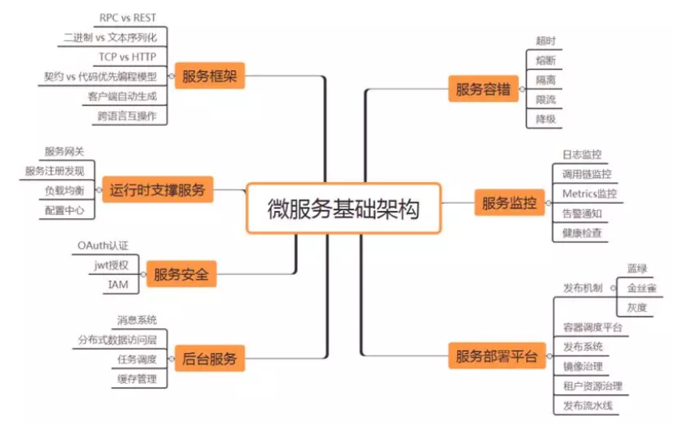
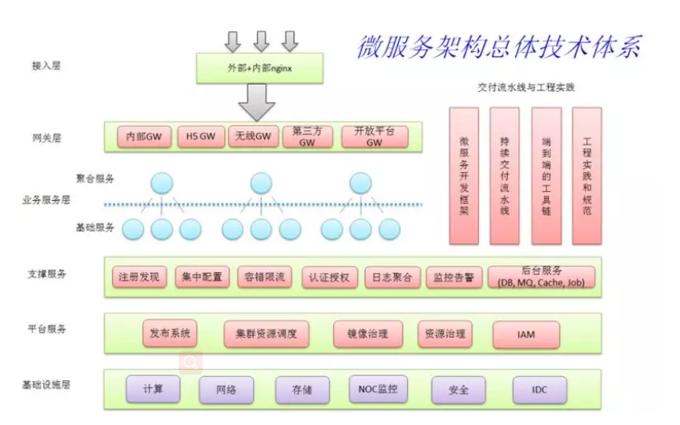

微服务架构技术栈选型手册¶
2014~2018，微服务经过三年的发展，现状如何？这是一份为让你更好使用微服务的技术站选型手册。除此之外，你还可以按需选用配套的微服务架构视频内容。
一、前言¶
2014 年可以认为是微服务 1.0 的元年，当年有几个标志性事件，一是 Martin Fowler 在其博客上发表了”Microservices”一文，正式提出微服务架构风格；二是 Netflix 微服务架构经过多年大规模生产验证，最终抽象落地形成一整套开源的微服务基础组件，统称 NetflixOSS，Netflix 的成功经验开始被业界认可并推崇；三是 Pivotal 将 NetflixOSS 开源微服务组件集成到其 Spring 体系，推出 Spring Cloud 微服务开发技术栈。
一晃三年过去，微服务技术生态又发生了巨大变化，容器，PaaS，Cloud Native，gRPC，ServiceMesh，Serverless 等新技术新理念你方唱罢我登场，不知不觉我们又来到了微服务 2.0 时代。
基于近年在微服务基础架构方面的实战经验和平时的学习积累，我想总结并提出一些构建微服务 2.0 技术栈的选型思路，供各位在一线实战的架构师、工程师参考借鉴。对于一些暂时还没有成熟开源产品的微服务支撑模块，我也会给出一些定制自研的设计思路。
二、选型准则¶
对于技术选型，我个人有很多标准，其中下面三项是最重要的：
1. 生产级¶
我们选择的技术栈是要解决实际业务问题和上生产抗流量的（选择不慎可能造成生产级事故），而不是简单做个 POC 或者 Demo 展示，所以生产级（Production Ready），可运维（Ops Ready），可治理，成熟稳定的技术才是我们的首选；
2. 一线互联网公司落地产品¶
我们会尽量采用在一线互联网公司落地并且开源的，且在社区内形成良好口碑的产品，它们已经在这些公司经过流量冲击，坑已经基本被填平，且被社区接受形成一个良好的社区生态（本文附录部分会给出所有推荐使用或参考的开源项目的 GitHub 链接）。
3. 开源社区活跃度¶
GitHub 上的 stars 的数量是一个重要指标，同时会参考其代码和文档更新频率（尤其是近年），这些指标直接反应开源产品的社区活跃度或者说生命力。
另外，对于不同业务体量和团队规模的公司，技术选型标准往往是不同的，创业公司的技术选型和 BAT 级别公司的技术选型标准可能完全不同。本文主要针对日流量千万以上，研发团队规模不少于 50 人的公司，如果小于这个规模我建议认真评估是否真的需要采用微服务架构。考虑到 Java 语言在国内的流行度和我个人的背景经验，本文主要针对采用 Java 技术栈的企业。本文也假定自建微服务基础架构，有些产品其实有对应的云服务可以直接使用，自建和采用云服务各有利弊，架构师需要根据场景上下文综合权衡。
三、微服务基础架构关键点¶
下面脑图中芒果色标注的七个模块，我认为是构建微服务 2.0 技术栈的核心模块，本文后面的选型会分别基于这些模块展开。对于每个模块我也列出一些核心架构关注点，在选择具体产品时，需要尽可能覆盖到这些关注点。
 下图是我近期工作总结和参考的一个微服务技术体系，我想同时分享给一线架构师或者工程师参考，其中粉红色标注的模块是和微服务关系最密切的模块，大家在做技术选型时，可以同时对照这个体系。

四、服务框架选型¶
服务框架是一个比较成熟的领域，有太多可选项。Spring Boot/Cloud[附录 12.1] 由于 Spring 社区的影响力和 Netflix 的背书，目前可以认为是构建 Java 微服务的一个社区标准，Spring Boot 目前在 GitHub 上有超过 20k 星。
基于 Spring 的框架本质上可以认为是一种 RESTful 框架（不是 RPC 框架），序列化协议主要采用基于文本的 JSON，通讯协议一般基于 HTTP。RESTful 框架天然支持跨语言，任何语言只要有 HTTP 客户端都可以接入调用，但是客户端一般需要自己解析 payload。目前 Spring 框架也支持 Swagger 契约编程模型，能够基于契约生成各种语言的强类型客户端，极大方便不同语言栈的应用接入，但是因为 RESTful 框架和 Swagger 规范的弱契约特性，生成的各种语言客户端的互操作性还是有不少坑的。
Dubbo[附录 12.2] 是阿里多年构建生产级分布式微服务的技术结晶，服务治理能力非常丰富，在国内技术社区具有很大影响力，目前 github 上有超过 16k 星。Dubbo 本质上是一套基于 Java 的 RPC 框架，当当 Dubbox 扩展了 Dubbo 支持 RESTful 接口暴露能力。
Dubbo 主要面向 Java 技术栈，跨语言支持不足是它的一个弱项，另外因为治理能力太丰富，以至于这个框架比较重，完全用好这个框架的门槛比较高，但是如果你的企业基本上投资在 Java 技术栈上，选 Dubbo 可以让你在服务框架一块站在较高的起点上，不管是性能还是企业级的服务治理能力，Dubbo 都做的很出色。新浪微博开源的 Motan（GitHub 4k stars）也不错，功能和 Dubbo 类似，可以认为是一个轻量裁剪版的 Dubbo。
gRPC[附录 12.3] 是谷歌近年新推的一套 RPC 框架，基于 protobuf 的强契约编程模型，能自动生成各种语言客户端，且保证互操作。支持 HTTP2 是 gRPC 的一大亮点，通讯层性能比 HTTP 有很大改进。Protobuf 是在社区具有悠久历史和良好口碑的高性能序列化协议，加上 Google 公司的背书和社区影响力，目前 gRPC 也比较火，GitHub 上有超过 13.4k 星。
目前看 gRPC 更适合内部服务相互调用场景，对外暴露 RESTful 接口可以实现，但是比较麻烦（需要 gRPC Gateway 配合），所以对于对外暴露 API 场景可能还需要引入第二套 RESTful 框架作为补充。总体上 gRPC 这个东西还比较新，社区对于 HTTP2 带来的好处还未形成一致认同，建议谨慎投入，可以做一些试点。
五、运行时支撑服务选型¶
运行时支撑服务主要包括服务注册中心，服务路由网关和集中式配置中心三个产品。
服务注册中心，如果采用 Spring Cloud 体系，则选择 Eureka[附录 12.4] 是最佳搭配，Eureka 在 Netflix 经过大规模生产验证，支持跨数据中心，客户端配合 Ribbon 可以实现灵活的客户端软负载，Eureka 目前在 GitHub 上有超过 4.7k 星；Consul[附录 12.5] 也是不错选择，天然支持跨数据中心，还支持 KV 模型存储和灵活健康检查能力，目前在 GitHub 上有超过 11k 星。
服务网关也是一个比较成熟的领域，有很多可选项。如果采用 Spring Cloud 体系，则选择 Zuul[附录 12.6] 是最佳搭配，Zuul 在 Netflix 经过大规模生产验证，支持灵活的动态过滤器脚本机制，异步性能不足（基于 Netty 的异步 Zuul 迟迟未能推出正式版）。Zuul 网关目前在 github 上有超过 3.7k 星。基于 Nginx/OpenResty 的 API 网关 Kong[附录 12.7] 目前在 github 上比较火，有超过 14.1k 星。因为采用 Nginx 内核，Kong 的异步性能较强，另外基于 lua 的插件机制比较灵活，社区插件也比较丰富，从安全到限流熔断都有，还有不少开源的管理界面，能够集中管理 Kong 集群。
配置中心，Spring Cloud 自带 Spring Cloud Config[附录 12.8]（GitHub 0.75k stars），个人认为算不上生产级，很多治理能力缺失，小规模场景可以试用。个人比较推荐携程的 Apollo[附录 12.9] 配置中心，在携程经过生产级验证，具备高可用，配置实时生效（推拉结合），配置审计和版本化，多环境多集群支持等生产级特性，建议中大规模需要对配置集中进行治理的企业采用。Apollo 目前在 github 上有超过 3.4k 星。
六、服务监控选型¶
主要包括日志监控，调用链监控，Metrics 监控，健康检查和告警通知等产品。
ELK 目前可以认为是日志监控的标配，功能完善开箱即用，ElasticSearch[附录 12.10] 目前在 GitHub 上有超过 28.4k 星。Elastalert[附录 12.11] (GitHub 4k stars) 是 Yelp 开源的针对 ELK 的告警通知模块。
调用链监控目前社区主流是点评 CAT[附录 12.12]（GitHub 4.3k stars），Twitter 之前开源现在由 OpenZipkin 社区维护的 Zipkin[附录 12.13]（GitHub 7.5k stars）和 Naver 开源的 Pinpoint[附录 12.14]（GitHub 5.3k stars）。个人比较推荐点评开源的 CAT，在点评和国内多家互联网公司有落地案例，生产级特性和治理能力较完善，另外 CAT 自带告警模块。下面是我之前对三款产品的评估表，供参考。
 Metrics 监控主要依赖于时间序列数据库 (TSDB)，目前较成熟的产品是 StumbleUpon 公司开源的基于 HBase 的 OpenTSDB[附录 12.15]（基于 Cassandra 的 KariosDB[附录 12.16] 也是一个选择，GitHub 1.1k stars，它基本上是 OpenTSDB 针对 Cassandra 的一个改造版），OpenTSDB 具有分布式能力可以横向扩展，但是相对较重，适用于中大规模企业，OpenTSDB 目前在 GitHub 上有近 2.9k 星。
Metrics 监控主要依赖于时间序列数据库 (TSDB)，目前较成熟的产品是 StumbleUpon 公司开源的基于 HBase 的 OpenTSDB[附录 12.15]（基于 Cassandra 的 KariosDB[附录 12.16] 也是一个选择，GitHub 1.1k stars，它基本上是 OpenTSDB 针对 Cassandra 的一个改造版），OpenTSDB 具有分布式能力可以横向扩展，但是相对较重，适用于中大规模企业，OpenTSDB 目前在 GitHub 上有近 2.9k 星。
OpenTSDB 本身不提供告警模块，Argus[附录 12.17]（GitHub 0.29k 星）是 Salesforce 开源的基于 OpenTSDB 的统一监控告警平台，支持丰富的告警函数和灵活的告警配置，可以作为 OpenTSDB 的告警补充。近年也出现一些轻量级的 TSDB，如 InfluxDB[附录 12.18]（GitHub 12.4k stars）和 Prometheus[附录 12.19]（GitHub 14.3k stars），这些产品函数报表能力丰富，自带告警模块，但是分布式能力不足，适用于中小规模企业。Grafana[附录 12.20]（GitHub 19.9k stars）是 Metrics 报表展示的社区标配。
社区还有一些通用的健康检查和告警产品，例如 Sensu[附录 12.21]（GitHub 2.7k stars），能够对各种服务（例如 Spring Boot 暴露的健康检查端点，时间序列数据库中的 metrics，ELK 中的错误日志等）定制灵活的健康检查 (check)，然后用户可以针对 check 结果设置灵活的告警通知策略。Sensu 在 Yelp 等公司有落地案例。其它类似产品还有 Esty 开源的 411[附录 12.22]（GitHub 0.74k 星）和 Zalando 的 ZMon[附录 12.23] (GitHub 0.15k 星)，它们是分别在 Esty 和 Zalando 落地的产品，但是定制 check 和告警配置的使用门槛比较高，社区不热，建议有定制自研能力的团队试用。ZMon 后台采用 KairosDB 存储，如果企业已经采用 KariosDB 作为时间序列数据库，则可以考虑 ZMon 作为告警通知模块。
七、服务容错选型¶
针对 Java 技术栈，Netflix 的 Hystrix[附录 12.24]（github 12.4k stars）把熔断、隔离、限流和降级等能力封装成组件，任何依赖调用（数据库，服务，缓存）都可以封装在 Hystrix Command 之内，封装后自动具备容错能力。Hystrix 起源于 Netflix 的弹性工程项目，经过 Netflix 大规模生产验证，目前是容错组件的社区标准，GitHub 上有超 12k 星。其它语言栈也有类似 Hystrix 的简化版本组件。
Hystrix 一般需要在应用端或者框架内埋点，有一定的使用门槛。对于采用集中式反向代理（边界和内部）做服务路由的公司，则可以集中在反向代理上做熔断限流，例如采用 Nginx[附录 12.25]（GitHub 5.1k stars）或者 Kong[附录 12.7]（GitHub 11.4k stars）这类反向代理，它们都插件支持灵活的限流容错配置。Zuul 网关也可以集成 Hystrix 实现网关层集中式限流容错。集中式反向代理需要有一定的研发和运维能力，但是可以对限流容错进行集中治理，可以简化客户端。
八、后台服务选型¶
后台服务主要包括消息系统，分布式缓存，分布式数据访问层和任务调度系统。后台服务是一个相对比较成熟的领域，很多开源产品基本可以开箱即用。
消息系统，对于日志等可靠性要求不高的场景，则 Apache 顶级项目 Kafka[附录 12.26]（GitHub 7.2k stars）是社区标配。对于可靠性要求较高的业务场景，Kafka 其实也是可以胜任，但企业需要根据具体场景，对 Kafka 的监控和治理能力进行适当定制完善，Allegro 公司开源的 hermes[附录 12.27]（GitHub 0.3k stars）是一个可参考项目，它在 Kafka 基础上封装了适合业务场景的企业级治理能力。阿里开源的 RocketMQ[附录 12.28]（GitHub 3.5k 星）也是一个不错选择，具备更多适用于业务场景的特性，目前也是 Apache 顶级项目。RabbitMQ[附录 12.29]（GitHub 3.6k 星）是老牌经典的 MQ，队列特性和文档都很丰富，性能和分布式能力稍弱，中小规模场景可选。
对于缓存治理，如果倾向于采用客户端直连模式（个人认为缓存直连更简单轻量），则 SohuTv 开源的 cachecloud[附录 12.30]（GitHub 2.5k stars）是一款不错的 Redis 缓存治理平台，提供诸如监控统计，一键开启，自动故障转移，在线伸缩，自动化运维等生产级治理能力，另外其文档也比较丰富。如果倾向采用中间层 Proxy 模式，则 Twitter 开源的 twemproxy[附录 12.31]（GitHub 7.5k stars）和 CodisLab 开源的 codis[附录 12.32]（GitHub 6.9k stars）是社区比较热的选项。
对于分布式数据访问层，如果采用 Java 技术栈，则当当开源的 shardingjdbc[附录 12.33]（GitHub 3.5k stars）是一个不错的选项，分库分表逻辑做在客户端 jdbc driver 中，客户端直连数据库比较简单轻量，建议中小规模场景采用。如果倾向采用数据库访问中间层 proxy 模式，则从阿里 Cobar 演化出来的社区开源分库分表中间件 MyCAT[附录 12.34]（GitHub 3.6k stars）是一个不错选择 。proxy 模式运维成本较高，建议中大规模场景，有一定框架自研和运维能力的团队采用。
任务调度系统，个人推荐徐雪里开源的 xxl-job[附录 12.35]（GitHub 3.4k stars），部署简单轻量，大部分场景够用。当当开源的 elastic-job[附录 12.36]（GitHub 3.2k stars）也是一个不错选择，相比 xxl-job 功能更强一些也更复杂。
九、服务安全选型¶
对于微服务安全认证授权机制一块，目前业界虽然有 OAuth 和 OpenID connect 等标准协议，但是各家具体实现的做法都不太一样，企业一般有很多特殊的定制需求，整个社区还没有形成通用生产级开箱即用的产品。有一些开源授权服务器产品，比较知名的如 Apereo CAS[附录 12.37]（GitHub 3.6k stars），JBoss 开源的 keycloak[附录 12.38]（GitHub 1.9 stars），spring cloud security[附录 12.39] 等，大都是 opinionated（一家观点和做法）的产品，同时因支持太多协议造成产品复杂，也缺乏足够灵活性。个人建议基于 OAuth 和 OpenID connect 标准，在参考一些开源产品的基础上（例如 Mitre 开源的 OpenID-Connect-Java-Spring-Server[附录 12.40]，GitHub 0.62k stars），定制自研轻量级授权服务器。Wso2 提出了一种微服务安全的参考方案 [附录 12.45]，建议参考，该方案的关键步骤如下：

-
使用支持 OAuth 2.0 和 OpenID Connect 标准协议的授权服务器（个人建议定制自研）；
-
使用 API 网关作为单一访问入口，统一实现安全治理；
-
客户在访问微服务之前，先通过授权服务器登录获取 access token，然后将 access token 和请求一起发送到网关；
-
网关获取 access token，通过授权服务器校验 token，同时做 token 转换获取 JWT token。
-
网关将 JWT Token 和请求一起转发到后台微服务；
-
JWT 中可以存储用户会话信息，该信息可以传递给后台的微服务，也可以在微服务之间传递，用作认证授权等用途；
-
每个微服务包含 JWT 客户端，能够解密 JWT 并获取其中的用户会话信息。
-
整个方案中，access token 是一种 by reference token，不包含用户信息可以直接暴露在公网上；JWT token 是一种 by value token，可以包含用户信息但不暴露在公网上。
十、服务部署平台选型¶
容器已经被社区接受为交付微服务的一种理想手段，可以实现不可变（immutable）发布模式。一个轻量级的基于容器的服务部署平台主要包括容器资源调度，发布系统，镜像治理，资源治理和 IAM 等模块。
集群资源调度系统：屏蔽容器细节，将整个集群抽象成容器资源池，支持按需申请和释放容器资源，物理机发生故障时能够实现自动故障迁移 (fail over)。目前 Google 开源的 Kubernetes[附录 12.41]，在 Google 背书和社区的强力推动下，基本已经形成市场领导者地位，GitHub 上有 31.8k 星，社区的活跃度已经远远超过了 mesos[附录 12.42]（GitHub 3.5k stars）和 swarm 等竞争产品，所以容器资源调度建议首选 K8s。当然如果你的团队有足够定制自研能力，想深度把控底层调度算法，也可以基于 Mesos 做定制自研。
镜像治理：基于 Docker Registry，封装一些轻量级的治理功能。VMware 开源的 harbor[附录 12.43] (GitHub 3.5k stars) 是目前社区比较成熟的企业级产品，在 Docker Registry 基础上扩展了权限控制，审计，镜像同步，管理界面等治理能力，可以考虑采用。
资源治理：类似于 CMDB 思路，在容器云环境中，企业仍然需要对应用 app，组织 org，容器配额和数量等相关信息进行轻量级的治理。目前这块还没有生产级的开源产品，一般企业需要根据自己的场景定制自研。
发布平台：面向用户的发布管理控制台，支持发布流程编排。它和其它子系统对接交互，实现基本的应用发布能力，也实现如蓝绿，金丝雀和灰度等高级发布机制。目前这块生产级的开源产品很少，Netflix 开源的 spinnaker[附录 12.44]（github 4.2k stars）是一个，但是这个产品比较复杂重量（因为它既要支持适配对接各种 CI 系统，同时还要适配对接各种公有云和容器云，使得整个系统异常复杂），一般企业建议根据自己的场景定制自研轻量级的解决方案。
IAM：是 identity & access management 的简称，对发布平台各个组件进行身份认证和安全访问控制。社区有不少开源的 IAM 产品，比较知名的有 Apereo CAS（GitHub 3.6k stars），JBoss 开源的 keycloak（GitHub 1.9 stars）等。但是这些产品一般都比较复杂重量，很多企业考虑到内部各种系统灵活对接的需求，都会考虑定制自研轻量级的解决方案。
考虑到服务部署平台目前还没有端到端生产级解决方案，企业一般需要定制集成，下面给出一个可以参考的具备轻量级治理能力的发布体系：
 简化发布流程如下：
简化发布流程如下：
-
应用通过 CI 集成后生成镜像，用户将镜像推到镜像治理中心；
-
用户在资产治理中心申请发布，填报应用，发布和配额相关信息，然后等待审批通过；
-
发布审批通过，开发人员通过发布控制台发布应用；
-
发布系统通过查询资产治理中心获取发布规格信息；
-
发布系统向容器云发出启动容器实例指令；
-
容器云从镜像治理中心拉取镜像并启动容器；
-
容器内服务启动后自注册到服务注册中心，并保持定期心跳；
-
用户通过发布系统调用服务注册中心调拨流量，实现蓝绿，金丝雀或灰度发布等机制；
-
网关和内部微服务客户端定期同步服务注册中心上的服务路由表，将流量按负载均衡策略分发到新的服务实例上。
另外，持续交付流水线（CD Pipeline）也是微服务发布重要环节，这块主要和研发流程相关，一般需要企业定制，下面是一个可供参考的流水线模型，在镜像治理中心上封装一些轻量级的治理流程，例如只有通过测试环境测试的镜像才能升级发布到 UAT 环境，只有通过 UAT 环境测试的镜像才能升级发布到生产环境，通过在流水线上设置一些质量门，保障应用高质量交付到生产。

十一、写在最后¶
注意，本文限于篇幅，对测试和 CI 等环节没有涉及，但它们同样是构建微服务架构的重要环节，也有众多成熟的开源产品可选。
技术选型虽然重要，但还只是微服务建设的一小部分工作，选型后的产品要在企业内部真正落地，形成完整的微服务技术栈体系，则后续还有大量集成、定制、治理、运维和推广等工作。
本文仅限个人经验视角，选型思路仅供参考借鉴。每个企业的具体上下文（业务场景，团队组织，技术架构等）各不相同，每个架构师的背景经验也各不相同，大家要结合实际自己做出选型，没有最好的技术栈，只有相对较合适的技术栈。另外，好的技术选型是相互借鉴甚至 PK 出来的，欢迎大家讨论，给出自己的微服务 2.0 技术栈选型意见。
十二、附录链接¶
-
Spring Boot https://github.com/spring-projects/spring-boot
-
Alibaba Dubbo https://github.com/alibaba/dubbo
-
Google gRPC https://github.com/grpc/grpc
-
NetflixOSS Eureka https://github.com/Netflix/eureka
-
Hashicorp Consul https://github.com/hashicorp/consul
-
NetflixOSS Zuul https://github.com/Netflix/zuul
-
Spring Cloud Config https://github.com/spring-cloud/spring-cloud-config
-
CTrip Apollo https://github.com/ctripcorp/apollo
-
ElasticSearch https://github.com/elastic/elasticsearch
-
Yelp Elastalert https://github.com/Yelp/elastalert
-
Dianping CAT https://github.com/dianping/cat
-
Naver Pinpoint https://github.com/naver/pinpoint
-
OpenTSDB https://github.com/OpenTSDB/opentsdb
-
KairosDB https://github.com/kairosdb/kairosdb
-
Prometheus https://github.com/prometheus/prometheus
-
Esty 411 https://github.com/etsy/411
-
Zalando ZMon https://github.com/zalando/zmon
-
NetflixOSS Hystrix https://github.com/Netflix/Hystrix
-
Apache Kafka https://github.com/apache/kafka
-
Allegro Hermes https://github.com/allegro/hermes
-
Apache Rocketmq https://github.com/apache/rocketmq
-
Sohutv CacheCloud https://github.com/sohutv/cachecloud
-
Twitter twemproxy https://github.com/twitter/twemproxy
-
CodisLab codis https://github.com/CodisLabs/codis
-
Dangdang Sharding-jdbc https://github.com/shardingjdbc/sharding-jdbc
-
Dangdang elastic-job https://github.com/elasticjob/elastic-job-lite
-
Apereo CAS https://github.com/apereo/cas
-
JBoss keycloak https://github.com/keycloak/keycloak
-
Spring cloud security https://github.com/spring-cloud/spring-cloud-security
-
OpenID-Connect-Java-Spring-Server https://github.com/mitreid-connect/OpenID-Connect-Java-Spring-Server
-
Google Kubernetes https://github.com/kubernetes/kubernetes
-
Apache Mesos https://github.com/apache/mesos
-
Vmware Harbor https://github.com/vmware/harbor
-
Netflix Spinnaker https://github.com/spinnaker/spinnaker
-
Microservices in Practice – Key Architecture Concepts of an MSA https://wso2.com/whitepapers/microservices-in-practice-key-architectural-concepts-of-an-msa/
- Serf https://github.com/hashicorp/serf